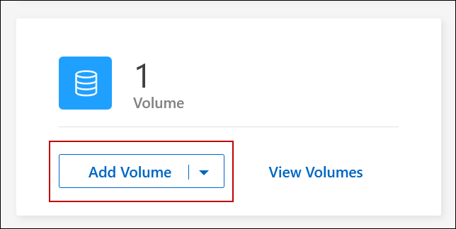

リリースノート
リリースノート
FlexVol ボリュームを作成します
 変更を提案
変更を提案
初期のCloud Volumes ONTAP システムの起動後にストレージの追加が必要になった場合は、BlueXPからNFS、CIFS、またはiSCSI用の新しいFlexVol ボリュームを作成できます。
BlueXPでは、いくつかの方法で新しいボリュームを作成できます。
始める前に
ボリュームのプロビジョニングに関する注意事項は次のとおりです。
-
iSCSIボリュームを作成すると、BlueXPによって自動的にLUNが作成されます。ボリュームごとに 1 つの LUN だけを作成することでシンプルになり、管理は不要になります。ボリュームを作成したら、 "IQN を使用して、から LUN に接続します ホスト"。
-
LUN は、 System Manager または CLI を使用して追加で作成できます。
-
AWS で CIFS を使用する場合は、 DNS と Active Directory を設定しておく必要があります。詳細については、を参照してください "Cloud Volumes ONTAP for AWS のネットワーク要件"。
-
Cloud Volumes ONTAP 構成でAmazon EBS Elastic Volumes機能がサポートされている場合は、この処理が必要になることがあります "ボリュームを作成したときの動作の詳細については、こちらをご覧ください"。
ボリュームを作成します
ボリュームを作成する最も一般的な方法は、必要なボリュームのタイプを指定してから、BlueXPがディスク割り当てを処理することです。ボリュームを作成するアグリゲートを選択することもできます。
-
左側のナビゲーションメニューから、* Storage > Canvas *を選択します。
-
キャンバスページで、 FlexVol ボリュームをプロビジョニングする Cloud Volumes ONTAP システムの名前をダブルクリックします。
-
BlueXPにディスク割り当ての処理を許可して新しいボリュームを作成するか、ボリュームの特定のアグリゲートを選択します。
特定のアグリゲートを選択することが推奨されるのは、 Cloud Volumes ONTAP システムのデータアグリゲートを十分に理解している場合のみです。
任意のアグリゲート[概要]タブで、[ボリューム]タイルに移動し、*[ボリュームの追加]*をクリックします。

タブの[Add Volume]ボタンのスクリーンショット。"]特定のアグリゲート[Aggregates]タブで、目的のアグリゲートタイルに移動します。メニューアイコンをクリックし、*[ボリュームの追加]*をクリックします。
 タブの[Add Volume]ボタンのスクリーンショット。"]
タブの[Add Volume]ボタンのスクリーンショット。"] -
ウィザードの手順に従って、ボリュームを作成します。
-
[ボリューム、詳細、保護、およびタグ]：ボリュームの基本的な詳細を入力し、Snapshotポリシーを選択します。
このページのフィールドの一部は分かりやすいもので、説明を必要としません。以下は、説明が必要なフィールドのリストです。
フィールド 説明 ボリューム名
新しいボリュームの識別可能な名前。
ボリュームサイズ
入力できる最大サイズは、シンプロビジョニングを有効にするかどうかによって大きく異なります。シンプロビジョニングを有効にすると、現在使用可能な物理ストレージよりも大きいボリュームを作成できます。
タグ
ボリュームに追加するタグはに関連付けられます "Application Templates サービス"を使用すると、リソースの管理を整理して簡単に行うことができます。
Storage VM（SVM）
Storage VM は ONTAP 内で実行される仮想マシンであり、クライアントにストレージサービスとデータサービスを提供します。これは SVM または SVM として認識されていることがあります。Cloud Volumes ONTAP にはデフォルトで 1 つの Storage VM が設定されますが、一部の設定では追加の Storage VM がサポートされます。新しいボリュームのStorage VMを指定できます。
スナップショットポリシー
Snapshot コピーポリシーは、自動的に作成される NetApp Snapshot コピーの頻度と数を指定します。NetApp Snapshot コピーは、パフォーマンスに影響を与えず、ストレージを最小限に抑えるポイントインタイムファイルシステムイメージです。デフォルトポリシーを選択することも、なしを選択することもできます。一時データには、 Microsoft SQL Server の tempdb など、 none を選択することもできます。
-
* プロトコル * ：ボリューム（ NFS 、 CIFS 、または iSCSI ）用のプロトコルを選択し、必要な情報を入力します。
[CIFS]を選択し、サーバが設定されていない場合は、[Next]をクリックすると、CIFS接続の設定を求めるメッセージが表示されます。
以下のセクションでは、説明が必要なフィールドについて説明します。説明はプロトコル別にまとめられています。
NFS- Access Control の略
-
クライアントがボリュームを使用できるようにするカスタムエクスポートポリシーを選択します。
- エクスポートポリシー
-
ボリュームにアクセスできるサブネット内のクライアントを定義します。デフォルトでは、BlueXPはサブネット内のすべてのインスタンスへのアクセスを提供する値を入力します。
CIFS- 権限とユーザ / グループ
-
ユーザとグループの SMB 共有へのアクセスレベルを制御できます（アクセス制御リストまたは ACL とも呼ばれます）。ローカルまたはドメインの Windows ユーザまたはグループ、 UNIX ユーザまたはグループを指定できます。ドメイン Windows ユーザ名を指定する場合は、 domain\username の形式を使用してユーザのドメインを含める必要があります。
- DNS プライマリおよびセカンダリ IP アドレス
-
CIFS サーバの名前解決を提供する DNS サーバの IP アドレス。リストされた DNS サーバには、 CIFS サーバが参加するドメインの Active Directory LDAP サーバとドメインコントローラの検索に必要なサービスロケーションレコード（ SRV ）が含まれている必要があります。
- 参加する Active Directory ドメイン
-
CIFS サーバを参加させる Active Directory （ AD ）ドメインの FQDN 。
- ドメインへの参加を許可されたクレデンシャル
-
AD ドメイン内の指定した組織単位（ OU ）にコンピュータを追加するための十分な権限を持つ Windows アカウントの名前とパスワード。
- CIFS サーバの NetBIOS 名
-
AD ドメイン内で一意の CIFS サーバ名。
- 組織単位
-
CIFS サーバに関連付ける AD ドメイン内の組織単位。デフォルトは CN=Computers です。
-
AWS Managed Microsoft AD を Cloud Volumes ONTAP の AD サーバとして設定するには、このフィールドに「 * OU=computers 、 OU=corp * 」と入力します。
-
- DNS ドメイン
-
Cloud Volumes ONTAP Storage Virtual Machine （ SVM ）の DNS ドメイン。ほとんどの場合、ドメインは AD ドメインと同じです。
- NTPサーバ
-
Active Directory DNS を使用して NTP サーバを設定するには、「 Active Directory ドメインを使用」を選択します。別のアドレスを使用して NTP サーバを設定する必要がある場合は、 API を使用してください。を参照してください "BlueXP自動化ドキュメント" を参照してください。
NTP サーバは、 CIFS サーバを作成するときにのみ設定できます。CIFS サーバを作成したあとで設定することはできません。
- LUN
-
iSCSI ストレージターゲットは LUN （論理ユニット）と呼ばれ、標準のブロックデバイスとしてホストに提示されます。iSCSIボリュームを作成すると、BlueXPによって自動的にLUNが作成されます。ボリュームごとに 1 つの LUN を作成するだけでシンプルになり、管理は不要です。ボリュームを作成したら、 "IQN を使用して、から LUN に接続します ホスト"。
- イニシエータグループ
-
イニシエータグループ（ igroup ）は、ストレージシステム上の指定した LUN にアクセスできるホストを指定します
- ホストイニシエータ（ IQN ）
-
iSCSI ターゲットは、標準のイーサネットネットワークアダプタ（ NIC ）、ソフトウェアイニシエータを搭載した TOE カード、 CNA 、または専用の HBA を使用してネットワークに接続され、 iSCSI Qualified Name （ IQN ）で識別されます。
-
* ディスクタイプ * ：パフォーマンスのニーズとコストの要件に基づいて、ボリュームの基盤となるディスクタイプを選択します。
-
-
* 使用状況プロファイルと階層化ポリシー * ：ボリュームで Storage Efficiency 機能を有効にするか無効にするかを選択し、を選択します "ボリューム階層化ポリシー"。
ONTAP には、必要なストレージの合計容量を削減できるストレージ効率化機能がいくつか搭載されています。NetApp Storage Efficiency 機能には、次のようなメリットがあります。
- シンプロビジョニング
-
物理ストレージプールよりも多くの論理ストレージをホストまたはユーザに提供します。ストレージスペースは、事前にストレージスペースを割り当てる代わりに、データの書き込み時に各ボリュームに動的に割り当てられます。
- 重複排除
-
同一のデータブロックを検索し、単一の共有ブロックへの参照に置き換えることで、効率を向上します。この手法では、同じボリュームに存在するデータの冗長ブロックを排除することで、ストレージ容量の要件を軽減します。
- 圧縮
-
プライマリ、セカンダリ、アーカイブストレージ上のボリューム内のデータを圧縮することで、データの格納に必要な物理容量を削減します。
-
* レビュー * ：ボリュームの詳細を確認して、 * 追加 * をクリックします。
Cloud Volumes ONTAP システムにボリュームが作成されます。
テンプレートからボリュームを作成します
特定のアプリケーションのワークロード要件に最適化されたボリュームを導入できるように、組織で Cloud Volumes ONTAP ボリュームテンプレートを作成している場合は、このセクションの手順に従います。
テンプレートを使用すると、ディスクタイプ、サイズ、プロトコル、スナップショットポリシー、クラウドプロバイダ、 その他。パラメータがすでに事前定義されている場合は、次のボリュームパラメータに進みます。

|
テンプレートを使用する場合にのみ、 NFS ボリュームまたは CIFS ボリュームを作成できます。 |
-
左側のナビゲーションメニューから、* Storage > Canvas *を選択します。
-
キャンバスページで、ボリュームをプロビジョニングする Cloud Volumes ONTAP システムの名前をクリックします。
-
[Volumes]タブに移動し、[Add Volume]>*[New Volume from Template]*をクリックします。

-
_ テンプレートの選択 _ ページで、ボリュームの作成に使用するテンプレートを選択し、 * 次へ * をクリックします。

_Editor_pageが表示されます。

-
アクションパネルの上に、テンプレートの名前を入力します。
-
_Context_の下に、を起動した作業環境の名前が作業環境に入力されます。ボリュームを作成する* Storage VM *を選択します。
-
テンプレートからハードコーディングされていないすべてのパラメータに値を追加します。を参照してください ボリュームを作成します Cloud Volumes ONTAP ボリュームの導入を完了するために必要なすべてのパラメータの詳細については、を参照してください。
-
[適用（Apply）]*をクリックして、設定したパラメータを選択したアクションに保存します。
-
定義する必要のある他の操作（BlueXPのバックアップとリカバリの設定など）がない場合は、*[テンプレートの保存]*をクリックします。
他のアクションがある場合は、左ペインのアクションをクリックして、完了する必要のあるパラメータを表示します。

たとえば、[Enable Cloud Backup on Volume]アクションでバックアップポリシーを選択する必要がある場合は、ここで選択できます。
-
テンプレートアクションの設定が完了したら、*テンプレートの保存*をクリックします。
Cloud Volumes ONTAP によってボリュームがプロビジョニングされ、進捗状況を確認するためのページが表示されます。

また、ボリュームでBlueXPのバックアップとリカバリを有効にするなど、テンプレートにセカンダリアクションが実装されている場合は、そのアクションも実行されます。
HA 構成の第 2 ノードにボリュームを作成する
デフォルトでは、HA構成の第1ノードにボリュームが作成されます。両方のノードがクライアントにデータを提供するアクティブ / アクティブ構成が必要な場合は、 2 番目のノードにアグリゲートとボリュームを作成する必要があります。
-
左側のナビゲーションメニューから、* Storage > Canvas *を選択します。
-
キャンバスページで、アグリゲートを管理する Cloud Volumes ONTAP 作業環境の名前をダブルクリックします。
-
[アグリゲート]タブで、*[アグリゲートの追加]*をクリックします。
-
[Add Aggregate]画面で、アグリゲートを作成します。

-
Home Node には、 HA ペアの 2 番目のノードを選択します。
-
BlueXPでアグリゲートが作成されたら、そのアグリゲートを選択し、*ボリュームの作成*をクリックします。
-
新しいボリュームの詳細を入力し、 * Create * をクリックします。
BlueXPでは、HAペアの2つ目のノードにボリュームが作成されます。

|
複数の AWS アベイラビリティゾーンに HA ペアを導入する場合は、ボリュームが配置されているノードのフローティング IP アドレスを使用してボリュームをクライアントにマウントする必要があります。 |
ボリュームを作成したら
CIFS 共有をプロビジョニングした場合は、ファイルとフォルダに対する権限をユーザまたはグループに付与し、それらのユーザが共有にアクセスしてファイルを作成できることを確認します。
ボリュームにクォータを適用する場合は、 System Manager または CLI を使用する必要があります。クォータを使用すると、ユーザ、グループ、または qtree が使用するディスク・スペースとファイル数を制限または追跡できます。